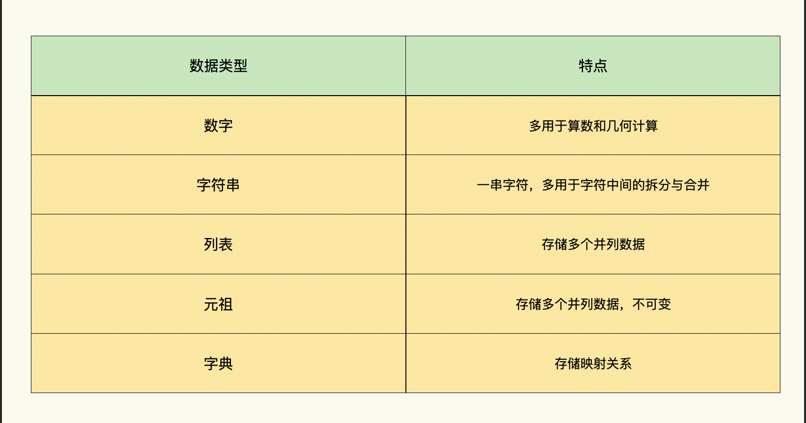

- 00 导读 入门Python的必备知识.md.html
- 00 开篇词 重复工作这么多，怎样才能提高工作效率？.md.html
- 01 拆分与合并：如何快速地批量处理内容相似的Excel？.md.html
- 02 善用Python扩展库：如何批量合并多个文档？.md.html
- 03 图片转文字：如何提高识别准确率？.md.html
- 04 函数与字典：如何实现多次替换.md.html
- 05 图像处理库：如何实现长图拼接？.md.html
- 06 jieba分词：如何基于感情色彩进行单词数量统计？.md.html
- 07 快速读写文件：如何实现跨文件的字数统计？.md.html
- 08 正则表达式：如何提高搜索内容的精确度？.md.html
- 09 扩展搜索：如何快速找到想要的文件？.md.html
- 10 按指定顺序给词语排序，提高查找效率.md.html
- 11 通过程序并行计算，避免CPU资源浪费.md.html
- 12 文本处理函数：三招解决数据对齐问题.md.html
- 13 Excel插件：如何扩展Excel的基本功能？.md.html
- 14 VBA脚本编程：如何扩展Excel，实现文件的批量打印？.md.html
- 15 PowerShell脚本：如何实现文件批量处理的自动化？.md.html
- 16 循环与文件目录管理：如何实现文件的批量重命名？.md.html
- 17 不同操作系统下，如何通过网络同步文件？.md.html
- 18 http库：如何批量下载在线内容，解放鼠标（上）？.md.html
- 19 http库：如何批量下载在线内容，解放鼠标（下）？.md.html
- 20 不同文件混在一起，怎么快速分类？.md.html
- 21 SQLite文本数据库：如何进行数据管理（上）？.md.html
- 22 SQLite文本数据库：如何进行数据管理（下）？.md.html
- 23 怎么用数据透视表更直观地展示汇报成果？.md.html
- 24 条形、饼状、柱状图最适合用在什么场景下？.md.html
- 25 图表库：想要生成动态图表，用Echarts就够了.md.html
- 26 快速提取图片中的色块，模仿一张大师的照片.md.html
- 27 zipfile压缩库：如何给数据压缩&加密备份？.md.html
- 28 Celery库：让计算机定时执行任务，解放人力.md.html
- 29 网络和邮件库：定时收发邮件，减少手动操作.md.html
- 30 怎么快速把任意文件格式转成PDF，并批量加水印？.md.html
- 春节特别放送1 实体水果店转线上销售的数据统计问题.md.html
- 春节特别放送2 用自顶至底的思路解决数据统计问题.md.html
- 春节特别放送3 揭晓项目作业的答案.md.html
- 结束语 和我一起成为10X效率职场人.md.html
- 捐赠
07 快速读写文件：如何实现跨文件的字数统计？
你好，我是尹会生。这节课，我们来学习下统计多个文件字数的方法。
之前我在出版图书的时候，每个章节都写入了一个单独的Word中，这就导致我无法使用Word自带的字数统计功能，一次性统计所有章节的字数，自然也就不能分别统计多文件的汉字、英语和标点符号的字数了。如果你在工作中也遇到过类似的情况，需要一次性统计大量的文本文件的字数，应该怎么解决呢?
今天我就来教你，怎样使用Python来批量统计多个文件的字数和标点符号。
首先呢，我们先学习一下简单的操作：统计单个文件的字数。掌握了Python统计字数的基本操作，批量统计也就不在话下了。
怎样实现单个文件字数统计
统计单个文件的字数，需要用到Python的文件读写函数和变量这两个功能。Python的读写函数是对文件内容的读取操作，变量呢，用来存储统计好的文件字数。
我把统计单个文件字数的操作分为三个步骤，分别为：
- 先把要统计的文件读入内存；
- 再对读入到内存的字数数量进行统计，并用变量保存；
- 最后是将结果写入统计字数的专用文件中。
我先来带你学习一下用Python读取文件需要使用哪些函数和语法。
1.把文件内容读取到内存中
Python实现读取文件内容到内存的函数有三个，这三个函数原理相同，但是读取的内容多少有些不同，分别为：
- read() ，逐个字符读取，一直读取到文件全部内容结束；
- readline()，读取一行内容；
- readlines()，读取多行内容。
对于统计单个文件字数的需求，选择哪个读取函数更合适呢？由于统计字数需要逐个字读取再对字数进行累加，因此，我使用read()函数将文件中所有的文字读入到内存中，相比按行读取，实现起来更加简单。
将文件内容读入变量后，变量中的文字内容和保存在文件中的文字内容相同，接下来我再通过统计字数的函数对变量进行统计，就能统计出一个文件里的文字有多少字数了。
具体如何实现呢？我给你举一个例子。
例如，我这里有一个需要统计字数的文件e.txt，它的内容为：
e约等于2.718281828
核心实现代码如下：
import pathlib
file_name = "e.txt"
# 取得脚本所在目录
current_path = pathlib.PurePath(__file__).parent
# 和脚本同目录下的文件绝对路径
file = current_path.joinpath(file_name)
# 打开文件
with open(file, encoding='utf-8') as f:
# 读取文件
content = f.read()
words = content.rstrip()
number = len(words) # 统计字数
print(number)
# 15
通过这段代码，你会发现，文件的读取函数是实现字数统计的关键功能。下面，我重点给你讲解下Python是怎么读取文件的。
Python要想读取一个文件，需要经过打开、读取和关闭这三个步骤。
在代码的第11行，我通过open()函数实现了文件的打开功能。需要注意的是，我为open()函数设置了两个参数，分别是：
- file变量，表示要打开文件的名称；
- encoding变量，表示文件的编码格式。
我来解释下这两个参数。第一个参数file变量的值是要操作的文件路径和文件名称，你需要正确指定它所在的路径和文件名称。第二个参数encoding变量的值指定了以哪种字符编码打开文件，错误的字符编码会导致内容读取异常，文字内容显示为“乱码”。
我们来具体看一下第一个参数file变量的路径是怎么正确进行设置的。
对file变量进行赋值时，需要注意赋值时的路径和文件的真实路径是否一致，如果file变量中的路径和真实路径不一致的话，Python程序运行的时候会提示找不到文件的错误。那应该如何确保路径正确呢?
我们通常的做法是事先在字符终端上取得要操作的文件的完整路径，再将完整路径作为字符串赋值给变量file，这样你就可以直接使用正确的文件路径了。但是这样操作步骤繁琐，且不够灵活。所以还有一种比较灵活的方法，那就是将要操作的文件和Python脚本文件放在相同的目录里，通过获取Python脚本文件的目录，间接获得要操作的文件目录。
例如我将e.txt和Python脚本文件放在同一目录，那么我在打开e.txt文件时，就要先获取Python脚本所在的目录位置了。我这里使用了一个特殊的变量__file__，来取得当前脚本所在的路径。
__file__变量比较特殊，它是在Python中预先定义好的一个变量，默认情况下它的值会被Python自动设置为当前脚本的完整路径名称。有了它，我就可以通过Python脚本的路径取得e.txt的完整路径了。获取完整路径的具体的步骤如下：
- 在代码中使用pathlib库的PurePath()函数，把当前Python脚本的路径转化为标准的pathlib格式。
- 通过parent属性去掉脚本的文件名，取得当前脚本所在的路径。
- 再通过joinpath()函数把脚本所在的路径和e.txt文件名进行拼接，得到e.txt的完整路径。
这种取得脚本同目录下的其他文件完整路径的用法，要比直接指定文件完整路径用法更灵活，我在后续内容中会使用这种方法处理文件的路径，请你认真掌握。
我们继续来学习open()函数的第二个参数。第二个参数的作用是设置open()函数使用何种字符编码打开文件。我使用了”encoding=utf-8” 作为open()函数调用的第二个参数。
不过你可能会问了，为什么指定这个参数的时候，要特意写出变量名称encoding呢？我在04讲的时候，给你讲过函数有定义和调用两种用法。
在函数定义的时候我们可以为函数指定一个或多个参数，如果使用了多个参数，你在调用函数的时候需要按顺序依次传入每一个参数。但是如果你想要使用某个参数默认值或不想按照顺序传入参数时怎么办呢？函数调用时，还可以根据参数的关键字来指定为函数传入哪些参数。比如说open()函数的参数有7个，为了便于你理解关键字参数，我将open()函数如何定义的前四个参数写在这里，open()函数的定义如下：
def open(file, mode='r', buffering=-1, encoding=None, ...)：
...
在open()函数的定义中，encoding参数是open()函数的第4个参数。如果我们只需要第1个和第4个参数，其他参数需要保持默认时，就可以使用如下格式调用open()函数：
open(file, encoding="utf-8", ...)：
...
在代码中，调用open()函数时，由于file参数是open()函数的第一个参数，因此可以不用指定参数的关键字。encoding参数并非open()函数定义的第二个参数，而是第四个参数，所以需要指定它的参数名称为encoding，根据open()函数的定义，encoding=“utf-8”会作为open()函数的第四个参数使用。这种使用关键字作为函数的参数的方式，也被称作函数的关键字传参方式。
通过encoding参数可以指定文件的字符编码，一般在macOS系统文字的编码为UTF-8编码，Windows下为GB2312编码。不同操作系统下打开文本文件需要使用不同的文件编码，这样可以避免文件打开出现乱码的问题。
在你正确使用了open()函数的两个参数以后，会返回一个表示文件的对象f, 只有设置了正确的文件路径、文件名称和字符编码，才能继续进行文件读取操作。文件的读取操作使用的是read()函数，read()函数会根据文件的对象f，按照open()函数定义好的打开方式进行逐个字的读取操作。Python对文件的其他操作，全都需要通过文件操作函数调用对象f来完成。
另外要特别注意的是，在open()函数这一行的开头，我还使用了一个关键字with，with关键字下面的代码是缩进形式，和with关键字形成了一个语句块（具体参见导读），在with语句块结束之后，不必手动调用close()函数关闭文件，Python会自动将文件关闭。因此，你会看到我在程序中调用了open()函数打开文件，但是没有调用关闭文件的close()函数。
总的来说，相对于手动调用close()函数来关闭文件，使用with函数减少了打开过多文件造成系统资源浪费和数据丢失的风险。
2.统计文件的字数
打开了文件之后，我们就可以来统计文件的字数了，我们可以直接利用Python的内置函数len()来实现。
len()函数在Python中最初设计的功能就是统计字符串的长度，即字符串中有多少字符。因此我利用len()函数可以对字符串数据类型进行操作的特性，将文件一次性读入内存，放入字符串数据类型中。我在统计字数之前还增加了一个rstrip()函数，它会自动剔除出现在文件末尾的空行、空格，让你统计的结果更精确。
在进行文件字数统计的时候，需要注意，在代码中我使用了read()函数实现了对文件内容的一次性读取到内存的功能。如果你的文件较大，我建议你使用readline()函数按行读取，并逐行统计字数，否则容易出现内存不足的问题。
3.将统计结果写入文件
如果你需要将统计结果写入文件，可以对open()函数打开文件方式进行简单的修改，就可以实现文件写入功能了，写入文件的代码如下：
with open("total.txt", "w", encodong="utf-8") as f:
f.write("15个字符")
通过上面的代码，我把”15个字符”这串字符串写入到空白文件total.txt中了。
open()函数的第二个参数表示文件的打开方式，它默认值是“r”，代表了文件以读取方式进行打开。这时对象f只能进行文件读取操作，我们需要将第二个参数指定为”w”，就可以使用wirte()函数对文件进行写入操作了。而write()函数的第一个参数就是即将要写入文件的内容。
在为你介绍完单个文件的读写操作之后，我带你掌握了将文件读取到字符串变量，通过统计字符串的长度计算文件字数的方法，那么接下来我为你讲解一下如何统计多个文件的字数。
怎么统计多个文件的字数？
通过单个文件的字数统计功能的实现，我们发现每次对文件进行字数统计的时候，都需要进行文件的打开、读取和关闭操作。因此我们对多个文件的字数统计，就可以使用for循环来实现批量读取多个文件的内容。在这里我先直接给出代码。
p = Path(src_path)
files = [x for x in p.iterdir() if PurePath(x).match('*.txt')]
for file in files:
with open(file, encoding='utf-8') as f:
content = f.read()
words = content.rstrip()
number = len(words)
我来解释一下多文件统计的代码和单文件统计代码的区别。
你会发现，统计多个文件的字数时，除了使用到第一节课讲的for循环之外，还要使用合适的变量数据类型，用来存储多个文件字数统计过程中的文件字数。
在导读中我也给你介绍过，Python支持的数据类型包括：数字、字符串、列表、元组、字典五种，我在这里比较一下它们各自的特点，让你知道该怎么选择合适的数据类型来存放计算的中间结果。
首先是我们在前面几讲用到最多的数字和字符串类型，这两种类型也被称作基本类型。就像它们的名字一样，分别用来存储数值和一串字符。
数字类型是一种非常适合进行整数、浮点数的转换和算数几何计算最常用的类型。在单文件字数统计的场景，用来储存每个文件的字数是最合适的类型。如果把场景扩展到统计多个文件的字数，使用一个数字类型的变量是不够的，你需要在循环中再增加一个新的数字类型的变量，对多个文件的统计结果进行依次累加就可以了。
那其他的类型适合用来进行字数统计吗?
字符串类型会使用英文的单引号或双引号来创建一串字符，它内置的功能一般为多个字符串进行连接和截取字符串里的某些字符的，显然不适合进行字数累加的统计。
那列表和元组有什么特性呢？当你需要记录多个并列结果的数字或字符串时，我们就可以把数字和字符串放在列表和元组数据类型中。而列表和元组中的每个元素都会被分配一个位置，也有人把这里的位置称作索引，第一个元素的索引是0，第二个是1，以此类推。
例如对多个文件进行字数统计的场景下，我们就可以将五个文件字数统计的结果分别放入到列表当中，它的写法如下：
list1 = [15, 20, 35, 40, 50 ]
list1 就是一个列表数据类型的变量，它包含了五个元素，第一个元素或索引为0的元素是15，第二个是20。
元组和列表极为相似，不同之处在于元组的元素不能修改，这个特性在Python中，叫做内容“不可变”。这是它与列表的主要区别，元组查找的效率要远远高于列表，因此在进行查找操作时，经常将列表类型转换为元组类型，再进行内容查找操作。
最后一种类型，也是我们在第二讲接触过的字典类型。字典的每个键值对都用冒号进行分隔，每个键值对之间用逗号分割，字典需要被包括在花括号 {} 中，字典类型强调键值对的映射关系。如果你需要记录文件名和统计结果时，可以使用字典方式保存。保存形式如下：
dict1 = {"file1.txt":15,"file2.txt": 20, "file3.txt":35}
好了，掌握了python支持的五种数据类型，以及它们各自的适用场景，我把它们的特点总结在下面的表格。

那我接下来就给你分享进行字数统计时的两种常见的场景需求。
多个文件记录字数，用列表数据类型更适合
由于我们的需求是实现跨文件的字数统计，那么就需要一个数据类型来记录每一个文件的字数有多少。根据我们刚才对不同数据类型的分析，列表就是非常适合存储每个文件字数的数据类型。
在多文件字数统计的场景下，我们只需要其中的append()内置方法，就可以实现对列表添加元素了。如果你想了解列表类型更多的内置方法，可以参考官方文档来查看它们的定义和用法。
append()内置方法，可以在列表的最后一个位置添加一个新的元素。例如当前统计的五个文件字数就可以采用列表方式存储，它的定义方式如下：
list1 = [15, 20, 35, 40, 50 ]
list1 变量经过赋值，得到的列表包含了5个数字类型。当统计第6个文件的字数，假设字数为“30”个字时，就可以使用list1.append(30) 的方式在列表后增加元素。增加后list1变量为：
list1 = [15, 20, 35, 40, 50, 30 ]
对于多个文件的字数统计，要操作的数据类型为列表，而len()函数只能支持字符串，不能支持列表。所以我们需要把统计列表元素和的函数由len()改为sum()函数。另外，sum()是能够直接支持列表类型的求和函数，所以这6个文件的字数，就可以使用sum()函数进行累加，从而得到多个文件的总字数了。它的代码如下：
sum(list1)
上面就是我们通过for循环和列表数据类型实现了对多个文件字数的统计和累加。接下来我们把需求再扩展一下，如果我需要分类统计，比如说想要统计中文、英文、标点符号各自的数量，那应该选择什么样的数据类型呢?
扩展需求：统计中文、英文和标点符号各自的数量
想要实现中、英文和标点符号各自的数量统计，我们就需要考虑继续使用列表数据类型是否能够存储各自的数量统计结果？是否有更适合的数据类型？
关于存放每个文件的统计结果，我有两种考虑。
- 一种是中、英文和标点符号各自的数量统计以后，需要比列表更合适的数据类型，用来存放每个文件的统计结果。
- 一种是每个文件计算字数之后，如何和前一个文件的字数进行累加。
先来看第一种。
要想统计中、英文和标点符号各自的数量，你需要正确地书写每个字符。在Pyhon字符串类型中，有区分每个字符类型的内置函数。
因此，我使用字符串类型先对每个文件包含的字符进行中文、英文、数字、空格、特殊字符的划分，并使用数字类型的变量对每种类型的数量进行了记录。
我将实现这一功能的核心代码贴在这里供你参考：
import string
for s in str:
# 英文
if s in string.ascii_letters:
count_en += 1
# 数字
elif s.isdigit():
count_dg += 1
# 空格
elif s.isspace():
count_sp += 1
# 中文
elif s.isalpha():
count_zh += 1
# 特殊字符
else:
count_pu += 1
在这段代码中，我使用了for循环来遍历每个字，然后通过if分支结构进行判断，根据不同的类型对每次指定的类型进行累加。这样就完成了每个文件对字符数量的统计。
完成统计后，又该如何对它们进行保存呢？我这里使用了字典+列表的方式，用列表存储每个文件每一种字符的数量，为了能区分列表，我为它们分别取了一个名字，并把它们统一存储在字典当中。形成了字典的key是字符串，value是列表的数据类型，它的格式如下：
{'count_en': [7, 7], 'count_dg': [0, 0], 'count_sp': [1, 1], 'count_zh': [2, 4], 'count_pu': [5, 5]}
如何得到这种格式呢? 为了得到这种格式，我继续使用了列表的内置的append()函数，通过下面的代码实现了每个文件的每种类型分开进行统计的功能。
word_count["count_en"].append(count_en)
word_count["count_dg"].append(count_dg)
word_count["count_sp"].append(count_sp)
word_count["count_zh"].append(count_zh)
word_count["count_pu"].append(count_pu)
总结来说，在进行不同类型的字数统计的过程中，我通过字符串和数字这两种数据类型实现了单个文件的字数统计。在多个文件的数量合并功能中，我又使用了字典和列表两种数据类型实现了多个文件中间结果的存储和最终字数统计。
Python丰富的数据类型，可以让你更灵活地处理工作中的数据。
我将完整代码放在github中，你可以参考完整代码来理解我是如何在计算过程中使用字典、列表和字符串类型的。
总结
通过跨文件字数统计这个场景，我为你讲解了Python的文件操作函数和如何选择更合适的数据类型。
在进行文件的读写操作时，你需要注意被读写文件的路径、打开模式、字符编码这三个主要问题。同时，这三个问题也是新手在操作文件时会经常出现的错误的地方。
尤其是打开模式的错误的设置为“w”将重要文件覆盖写入的问题，在python初学者中经常出现，建议你先采用判断文件是否可读取的方式，避免对重要文件进行误写。
现实工作中的场景往往是比较复杂的，我们经常要根据不同的场景，把文件内容读取到不同的数据类型的变量中。Python丰富的数据类型可以让你更灵活的操作工作中的数据，通过选择合适的数据类型，也能使用各种数据类型自带的函数，减少手动实现自定义函数的代码，节省你的代码编码时间。
思考题
最后我想留一道思考题给你，在进行多个文件的中、英文和标点符号各自的数量统计时，你会选择哪种数据类型，用来存放每个文件的字数统计数据呢？欢迎你来说出自己的想法。
© 2019 - 2023 Liangliang Lee. Powered by gin and hexo-theme-book.